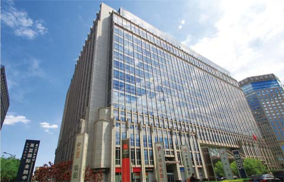

英蓝大厦

| 地 址： |
金融大街7号 |
| 层 数： |
23（19+4） |
| 总建筑面积： |
120000平方米 |
| 绿 化 面 积： |
3171平方米 |
| 规 划 面 积： |
平方米 |
| 物 业 管 理： |
北京英蓝和达物业管理有限公司 |
| 高 度： |
82米 |
| 主 要 功 能： |
办公 |
北京英蓝国际金融中心，占地1.22公顷，建筑面积约12万平方米,是金融街及北京目前设计建造标准最高的顶级商务大厦。客群囊括了美国高盛、瑞士银行、摩根大通、汇丰银行、渣打银行、苏格兰皇家银行、加拿大皇家银行、纽约梅隆银行、黑石基金、罗斯柴尔德集团等42家国际顶尖金融机构，共计112家企业。大厦正面由绿地、喷泉、雕塑组成了近万平米的楼前绿化广场。地下二、三、四层为车库，总车位约600个。